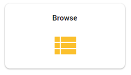
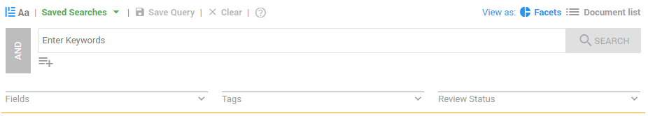
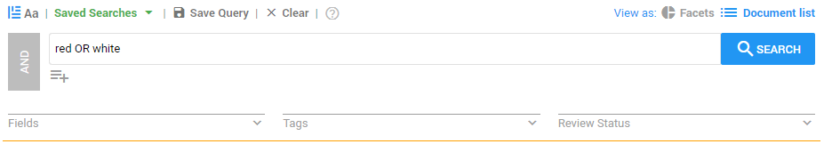
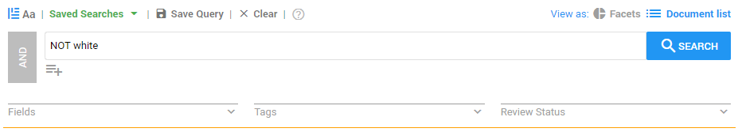
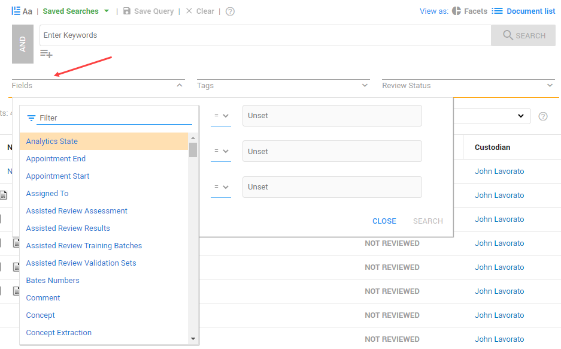
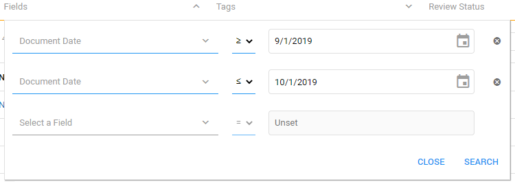
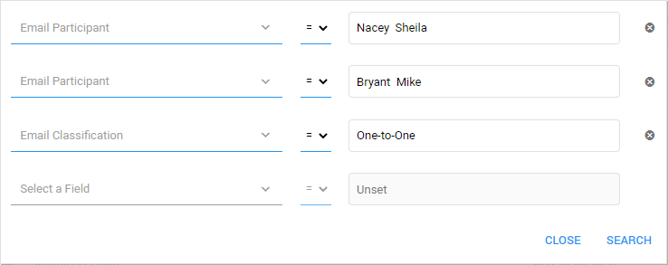

Tip: When searching from the Facet Dashboard, search results are displayed as Facets.
ZyLAB ONE offers many powerful search tools to help you find what you are looking for. Not only
the text of your documents, but also the information about the documents (the metadata),
can and should be searched. From a simple, keyword and phrase search, searching with Booleans (AND, OR and NOT) and wildcards, to the ability to search for patterns of text and numbers. In addition, with ZyLAB ONE’s Assisted Review tools, you can even find what you didn’t know you were looking for.
To access ZyLAB ONE’s search bar, select Browse from the Matter Home Page.

The search bar
(pictured below) is available from both the Facet Dashboard and from the Document List View.

By creating focused searches, you increase the likelihood that content is applicable to a document request and reduce the amount of content that you need to review.
|
|
Tip: When searching from the Facet Dashboard, search results are displayed as Facets. |
Entering a word or phrase in the search bar will return documents whose text contains the exact words and phrases. When searching for a phrase, it is not necessary to put the phrase in quotes. ZyLAB ONE will search any two or more words separated with a space as an exact phrase. For example, to search for the phrase “happy birthday”, simple enter it as follows:
When viewing documents, search hits will be highlighted in yellow.

Wildcards
Wildcards are used to replace or represent one or more characters in a term making the search query more flexible and efficient.
The ? matches a single character. For example:
Example of query | Results |
|---|---|
wom?n | woman, women |
?andy | candy, dandy, sandy, handy, etc. |
The * matches multiple characters. For example:
Example of query | Results |
|---|---|
*most | most, almost |
auto* | auto, automobile, automotive, automatic, autobiography, autocracy, autograph, etc. |
Multiple wildcards can be used in a single term. For example:
Example of query | Results |
|---|---|
*soft* | microsoft, microsoftware, soft, software, .. |
sh??e | shore, shade, shape, etc. |
Because words often have multiple meanings, keyword searching may be over- or under-inclusive. It is recommended that you test and sample the queries to ensure they properly capture the relevant documents. In addition, you may find it helpful to incorporate many of the techniques listed below to further define your search queries. For more information—see Keyword Search.
Boolean Operators, AND, OR, and NOT connect terms in a search query, making the search query more effective. These can be used to broaden or narrow your search. They can also be used to define your search more precisely.
For example:
The query red AND white would find documents containing both terms.
While red OR white would find documents containing either of the two words.

The query NOT white would find document that do not contain the term white.

Whereas red AND NOT white would find documents containing the term red but not the term white.
Learn more here:
Proximity search is used to find two or more words that appear close to each other in the document.
The Within operator can be used to limit your search to words that appear within a defined range in either direction.
The query is defined as w/n, where n is the maximum number of terms to look for.
As an example, to find the words 'project' and 'plan' within three words of each other,
the following syntax should be used: project w/3 plan.
Similar to the Within operator, the Precedes operator
allows you to find words where one word precedes another word within a defined range.
Use this operator when the order in which terms appear is important. The query is
defined as p/n where n is the maximum number of terms to look for.
As an example, to find the word 'happy' preceding the word 'birthday' by at least
three words, the following syntax should be used: happy p/3 birthday.

|
|
Tip: Use proximity searches as alternatives to phrase searches to broaden the results of those searches. For example, a search for 'John Doe' doesn’t retrieve 'Doe, John'. With proximity search (John w/3 Doe or John p/3 Doe), you can look for these terms close to each other and catch those variations. |
With ZyLAB ONE’s Field Search, you can quickly and easily search or filter by key document properties. Document properties, also known as metadata, are details about a file that describe or identify it. They include information such as title, author name, or email subject, as well as key dates, such as created data, modified date, or email sent date.
Having the ability to perform searches on these properties is extremely helpful in your document review. As an example, using a Field Search you can quickly search for all documents of a specific type, from a single custodian during a specific date range.
To search document properties, select the arrow from the Fields filter. This will populate a list of available properties to be search. Select the field to be queried from the drop down menu, select a range operator and enter your query parameters.

You can combine multiple fields in a single query. You can also combine a field search with keywords or phrases as follows:

ZyLAB ONE offers several document date properties for user to search and filter.
Here is an example of a query to find all documents between 9/1/2019 and 10/1/2019:

Using the email fields you can quickly and easily review all emails for a specific person, all emails between two people, or emails between a group of individuals over a specific period of time related to a specific topic, a common request in public records law.
Here is an example of a query to find all emails between two people:

Watch this video to learn how to find emails between two people:
For more on ZyLAB ONE search capabilities—see ZyLAB ONE Search Language Guide and see—Search Tips.